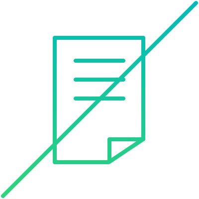
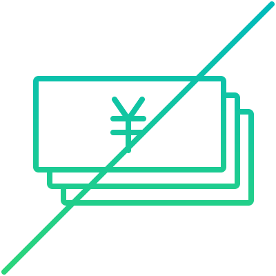
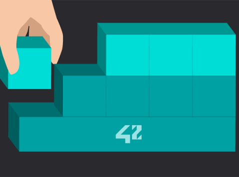
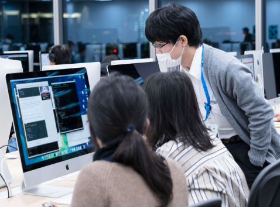
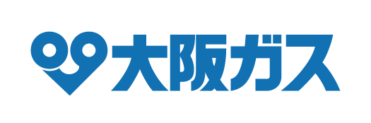
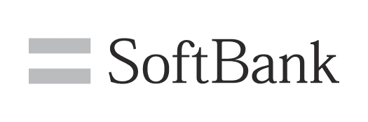
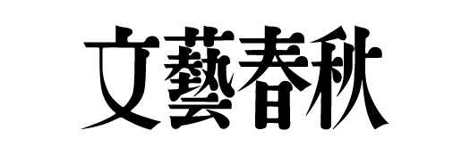
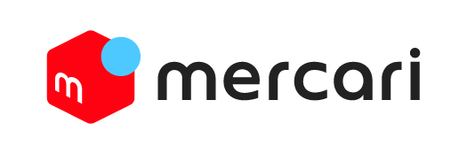

フランス発のエンジニア養成機関
42（フォーティーツー）は、フランス発のエンジニア養成機関です。
現在は、世界29カ国にて展開されており、2020年6月に東京校として 42 Tokyo を設立しました。
多くの企業の支援、寄付で支えられており、授業料は完全無料。
学生は、18歳以上であれば経歴を問わず入学することができ、
その後のキャリアは起業をしたり、就職するなど、自由です。
また、基礎カリキュラムを終えたら、他の42キャンパスに留学することも可能です。
革新的で、日々最新にアップデートされるカリキュラム。
世界中の学生たちが、今この瞬間も42でスキルを磨いています。
最高の学習環境を用意
- 
経歴不問
これまでの学歴や職歴、課外活動、国籍、人種などで入学希望者をフィルタリングすることはありません。
- 
学費完全無料
当校は42 Tokyoの理念に賛同する企業の寄付によって運営されており、入学金、授業料、教材費は一切かかりません。また卒業後のキャリアも自由に選ぶことが出来ます。
24時間オープン
キャンパスがいつでも開いているので、好きな時間に好きなだけコードを書くことができます。時間に縛られる教育はここにはありません。
入学資格
＊キャンパスは24時間365日開放しています。
世界で最も革新的な大学ランキング（WURI）
WURI (The World University Rankings for Innovation) とは
国家競争力政策戦略研究所（IPSNC）が主催し、スイス・フランクリン大学テーラー研究所（FUS）、オランダ・ハンザ応用科学大学によって設立された「ハンザ同盟大学連盟」他4団体が後援しているランキングです。 このランキングは、現代社会における起業家の需要の高まりに合わせて将来の労働力を生み出す大学の取り組みを強調し、評価することを目的としています。
企業が求めるスキルが総合的に身につく
- 
応用の利かない人を育てない。
技術の進歩に対応できる「底力」を鍛える。入学した学生はまずC言語やアルゴリズムを駆使し、主にコンピューターサイエンスを学びます。一見、遠回りに感じる学問ですが、体系的な基礎を確立するために大切なプロセスです。42 Tokyoが出題する課題は骨太なので、学習実績が企業へのアピールにもつながります。
- 
教師不在。学生同士で学びあうスタイルだから
「協調性」「対人スキル」を磨きながら知識を習得する。42 Tokyoは教師や授業がなく、学生同士で分からないことを調べて教え合うスタイルで学びます。人と協力しながらコードを書き、能動的に知識を高め合う経験は、社会で役に立ちます。

プログラミングはあくまで手段。
未知の課題に立ち向かうための「問題解決力」を磨き上げる。42 Tokyoには教科書がありません。教科書で必要な情報を教えられてから課題を与える、従来の教育方法とは違い、最初に課題が出題されます。課題を解き進める中で、自分で調べながらコードを書くことで、知識のみでなく「論理的思考」や「分析能力」などの問題解決力が身につきます。
42 Tokyoのキャンパスは24時間365日開放しており、決まった時間割がないため、何時にどれくらい学ぶかが学生に委ねられています。誰からも強制されず、自分の意志で学びに行く学生が集まるため、計画性が身につくとともに、モチベーションの高い仲間と切磋琢磨しながら学習できます。
42 Tokyoは全て無料
42 Tokyoは日本のエンジニアリングレベルの底上げをし、プログラミングや
開発における技術の革新をサポートしたいと思っています。そんな想いに賛同いただいた多くの企業や個人のサポートにより、
カリキュラムの全てを無料で学ぶことができます。
ALL PARTNERS
- 

- 


- 
- 
FOUNDING SPONSOR
Movies
入学者募集
私たちは、すぐれたエンジニアを目指し始めるすべての人を募集しています。
- 2023.08.04
- 2023年7月実施 入学試験「Piscine」合格発表
- 2023.07.01
- 42 Tokyoの非営利型一般社団法人への変更のお知らせ
- 2023.06.20
- ドリーム・アーツが42 Tokyoに特別カリキュラムを提供
- 2023.06.01
- 顧問就任のお知らせ
- 2023.03.31
- 42 Tokyoの新たな運営体制のお知らせ